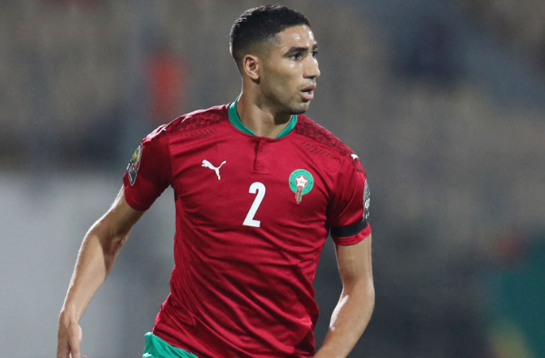

|  | Achraf Hakimi né le 4 novembre 1998 à Madrid, est un footballeur international marocain évoluant au poste d'arrière droit au Paris Saint-Germain. Formé au Real Madrid, il participe à l'UEFA Youth League avant de faire ses débuts en équipe première sous Zinédine Zidane, remportant la Ligue des champions 2017-2018. Ensuite, il est prêté pendant deux saisons au Borussia Dortmund avant de signer un contrat définitif avec l'Inter Milan, club dans lequel il se révèle en remportant la Serie A en 2021. À l'âge de dix-sept ans, il choisit de jouer en faveur de la sélection marocaine aux dépens de l'équipe nationale d'Espagne3. Avec celle-ci, il participe à la Coupe du monde 2018, compétition où il est le troisième plus jeune joueur derrière Daniel Arzani et Kylian Mbappé. Il dispute également la CAN 2019 et 2022 où il figure parmi l'équipe-type de cette dernière. |
vie privée
Marié à Hiba Abouk en 2018, il est le père de deux garçons : Amin Hakimi (né le 11 février 2020) et Naïm Hakimi (né le 12 février 2022). Le couple est présent à chaque festival de Cannes, grâce au fait que Hiba Abouk soit une actrice de scène internationale